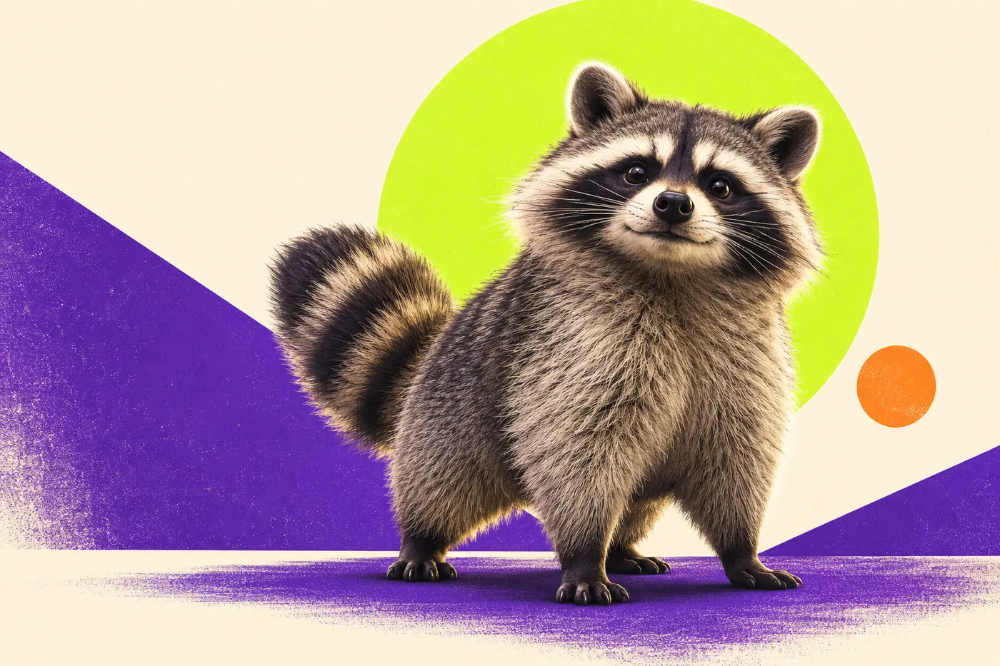

🦝
Real raccoon.
A wild Seattle raccoon became the center of an unusually wholesome internet obsession.
Jimothy is the wonderfully compact Seattle raccoon the internet couldn't ignore. This is an independent fan-built home for the lore, the memes, the community and the chaos.
Independent fan project. Not affiliated with Jimothy's caretakers or any token issuer. Respect wildlife. Nothing here is financial advice.

Jimothy became a viral favorite after videos of a remarkably compact raccoon roaming Seattle's Ballard neighborhood spread across social media. His distinctive build is associated with a rare spinal condition commonly described as short spine syndrome.
A wild Seattle raccoon became the center of an unusually wholesome internet obsession.
Neighborhood sightings in Ballard turned into viral clips, fan pages, jokes and local lore.
A tiny silhouette produced a giant creative universe of edits, reactions, art and stories.
Admire the legend from a respectful distance. Do not feed, approach, capture or disturb wildlife.
Jimothy works because the story is bigger than crypto. The animal, the local sightings and the internet's creative response came first. Everything else belongs downstream of that.
Unmistakable silhouette. Calm confidence. No explanation required.
Community edits make the story travel farther than any single account can.
This site is built to become a searchable home for the best Jimothy lore over time.
The public wall is designed as the community layer: sightings, memes, fan art, screenshots and completely unnecessary Jimothy theories.
Credit creators whenever possible.
No fake “official” claims, scams or misleading links.
No doxxing, exact live location tracking or behavior that disturbs wildlife.
Jimothy looks like somebody compressed a normal raccoon file and forgot to unzip it. Maximum respect.
The confidence-to-body-length ratio remains unmatched.
I came for the meme and somehow became emotionally invested in one Seattle raccoon.
This page tracks the Solana community token using its contract address. Token activity is separate from the real animal and should never be presented as an official relationship unless independently verified.
Ge87EtsjwRQbHaqQmKRno69RFTwh9bfSsm99XNxTpump
Market data stays on the independent data provider so this site remains fast and reliable.
Meme tokens are highly volatile and can lose most or all of their value. No promise of price, liquidity, utility or returns is made by this site.
The treasury area stays transparent by default. Until a public wallet and clear rules are published, this site will not display invented balances, simulated donations or fake buyback numbers.
Public treasury wallet will appear here only after it is deliberately created and documented.
Payments should be connected only after the support method, rules and destination are explicit.
Future contributions and community spending can be linked to an auditable public transaction history.
No. This is an independent fan-built project. Any future official relationship should be explicitly verified.
This site does not claim such a relationship. The token section is presented as a separate community layer.
Submissions are temporarily paused while a privacy-first moderation flow is prepared. The archive will reopen without exposing contributor account details.
From a respectful distance. Do not feed, approach, capture, track or disturb Jimothy or any other wild animal, and do not publish precise live locations.
No. The token hub is informational and for entertainment only. Meme tokens are highly volatile and can lose most or all of their value.
Because a production site should show real, auditable information. A public treasury can be added when it actually exists.